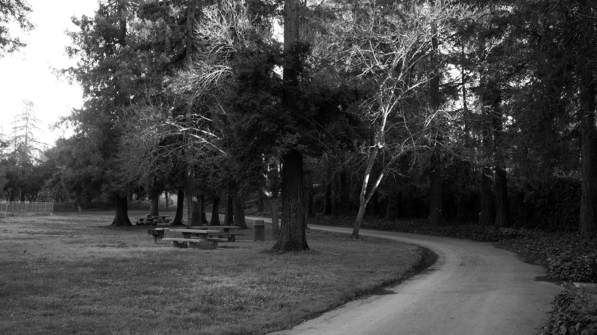

2D Islands
Intentionally made to look plain and two-dimensional. Doing this helps compare itself to the three-dimensional version.
2D Islands
Intentionally made to look plain and two-dimensional. Doing this helps compare itself to the three-dimensional version.

3D Islands
Being essentially a better version of the previous image, these two were made using Illustrator, with the intention that one would look better than the other, as to compare that the use of color, shading, and more can really make an image pop and feel more alive.
Below are some of the many photos taken during photography, where the main focus was black-and-white photography, as to not complicate things with different colors. This was due to using programs such as Adobe Lightroom Classic to edit the photos so they many of the finer details are not lost due to printing. Oftentimes darker details are lost due to print coming off as much more darker. This in turn means that photos must be taken in a RAW state, or uncompressed, as well as taken with a higher quality camera. Most of the images that I took kept to a theme of landscape, but capturing certain animals and critters was also enjoyable.


(Other digital projects, such as videos can be seen via the DMA tab)